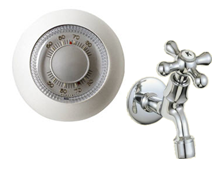
Als mensen zo een thermostaat zien, zoals hier links is afgebeeld.
Dan denkt men vaak dat het net zo werkt als een waterkraan.
Hoe verder je de kraan open draait, hoe sneller de wasbak is gevuld.
Dus hoe verder je de thermostaat draait, hoe sneller het huis wordt
opgewarmd, maar dat is natuurlijk niet zo.
Een beter design voor een thermostaat zou zijn als het design mensen doen “denken” aan een kraan met een zogenaamde aan/uitknop,
want een thermostaat is in principe niet meer dan een aan/uitknop voor de verwarming.
Bij zo een kraan kan je de kraan alleen aan of uit zetten en niet de snelheid van het stromend water bepalen.
Per tijdseenheid komt er steeds evenveel water uit. Doordat er per tijdseenheid evenveel water uit de kraan komt,
ziet de gebruiker dat je snelheid niet kan bepalen. Maar dat je de kraan alleen aan en uit kan zetten.
Dit moet ook gebeuren bij de thermostaat, hiervoor heb ik een digitale thermostaat gedesigned:
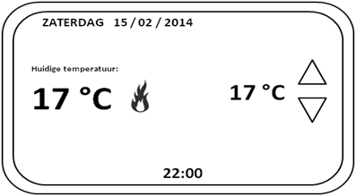
Bovenaan de thermostaat staat welke dag en welke datum het is. En onderin staat de tijd.
Links staat de huidige temperatuur van de kamer en rechts staat de temperatuur die je wil krijgen.
Die kun je bepalen door op de pijltjes te drukken.
Om de gebruiker doen realiseren dat de thermostaat in principe een aan/uitknop is,
moet de gebruiker eerst realiseren dat er maar één “snelheid” is voor het verwarmen.
Dit gebeurt door aan te geven wanneer de kamer wordt verwarmd.
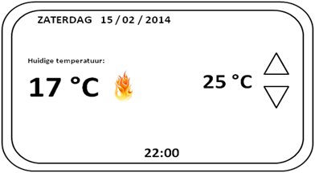
Om aan te geven wanneer de kamer wordt verwarmd, gaat het vlammetje op de thermostaat branden.
Dit vlammetje gaat meteen branden, als de “gewilde” temperatuur hoger is als de huidige kamer temperatuur.
De thermostaat geeft meteen aan dat de kamer wordt opgewarmd als de “gewilde” temperatuur hoger is dan de huidige temperatuur.
Daardoor zal de gebruiker realiseren dat pijltjes op de thermostaat alleen de temperatuur bepalen en niet de snelheid van het opwarmen.
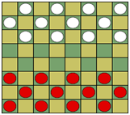
Het is natuurlijk belangrijk dat gebruikers het spel (dammen) kunnen spelen,
dus de weergave van het speelbord is een belangrijk element. Als de gebruiker
het dambord ziet, moet de gebruiker natuurlijk een set kunnen zetten.
Maar de gebruiker moet wel eerst weten wanneer hij of zij aan de beurt is.
Dat kan door het naast het speelbord aan te geven, zoals hieronder te zien is.
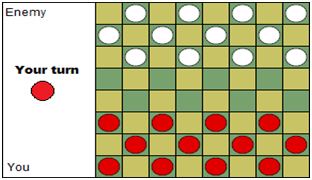
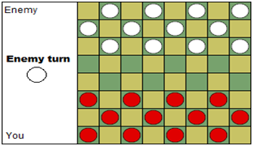
Nu is er duidelijk aangegeven wie er een set kan zetten.
Om te voorkomen dat mensen tijd gaan rekken of helemaal geen set zetten om de tegenstander te irriteren,
moet er een timer komen. Als de timer verlopen is, is automatisch de beurt voorbij.
Het kan natuurlijk zo zijn, dat mensen inzien dat ze toch niet meer winnen en daarom niet meer serieus gaan spelen.
Daarom is er een “forfeit-knop” om op te geven.
Rechts van het dambord zie je ook de vorderingen van het spel.
Je kunt zien hoeveel stenen jij en de tegenstander geslagen hebben.
Om de gebruiker te helpen bij het zetten van een set, wordt bij het aanklikken van één van je eigen stenen,
de vakjes “geselecteerd” die aangeven wat een geldige set zou zijn voor de aangeklikte steen.
 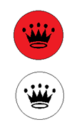
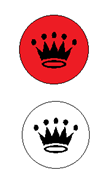
Dammen worden met een kroontje aangeduid, ze zijn “meer waard” en kunnen meerdere richtingen op.
Ze verschillen van gewone stenen, daarom is het handig aan te geven welke dammen zijn.
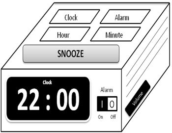
De opdracht is een wekker te ontwerpen.
Op de voorkant staat de display van je klok en de aan/uitknop van de wekker(alarm).
Aan de zijkant zitten de speakers en de volumedraaiknop.
Bovenop de wekker zitten 5 knopjes.
De grote, langwerpige knop is de snooze-knop.
Met de hour en minute knop kan je tijden veranderen van je klok of je wekker.
Dit bepaal je door op de clock of alarm knop te drukken.
Naast de tijd staat ook de “mode” op de display van je wekker,
als je bijvoorbeeld op de alarm-knop drukt dan zal de “mode” van “clock” naar “alarm” veranderen.
Door op "clock" te drukken zal die weer naar de normale klok gaan.
Door op de hour of minute knop te drukken kan je de tijd veranderen waarop je wekker afgaat.
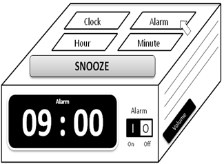
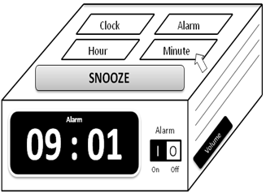
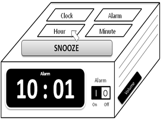
De "mode" zal veranderen als je op alarm drukt, de tekst "clock" op de display zal
dan veranderen naar alarm. Als je op "hour" of "minute" drukt, dan zal de uur of minuut
veranderen van de modus die op de display is aangegeven.
Als de wekker afgaat en je drukt op de snooze-knop, dan zal de wekker over 5 minuten weer opnieuw afgaan.